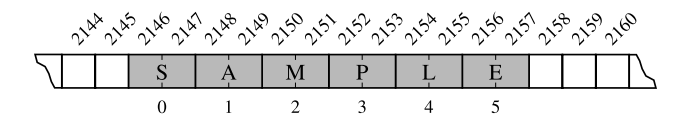

Chapter 1.8 - Iterators
In python, the mechanism for iteration is based upon the following conventions
- An iterator is an object that manages an iterations through a series of values. If variable
iidentifies an iterator object then each call to the built-in function,next(i), produces a subsequent element from the underlying series - An iterable is an object, obj, that produces an iterator via the syntax iter
(obj)
An iterator can be produced via the syntax i = iter(data), and then each subsquent call to next(i) will return an element of that list
- The iterator does not store its own copy of the list of elements, instead maintains a current index into the original list.
- By these defintions,
data = [1, 2, 3, 4]is an iterable, but not an iterator - Python also supports functions and classes that produce an implicit iterable series of values, for example,
range(10000)- Does not return a list of values (returns a range object) that is iterable
Generators
The most convienient technique for creating iterators in Python is through the use of generators.
- Implemented with a syntax that is very similar to a function, buts executes a yield statement to indicate each element of the series
For example, a traditional functions to find factors of n would be as so:
def factors(n): # traditional function that computes factors
results = [ ] # store factors in a new list
for k in range(1,n+1):
if n % k == 0: # divides evenly, thus k is a factor
results.append(k) # add k to the list of factors
return results # return the entire list
In contrast, an implementation with a generator would be as so:
def factors(n): # generator that computes factors
for k in range(1,n+1):
if n % k == 0: # divides evenly, thus k is a factor
yield k # yield this factor as next result
- Keyword yield indicates to Python that we are defined a generator, rather than a traditional function
- Python continues running the statement until a yield statement indicates the next value
- Allows for lazy evaluation, results are computed only if requested, and the entire memory need not reside in memory at one time
- generator can effectively produce an infinite series of values
Chapter 5 - Array Based Techniques
- Explore python's built-in sequence classes, namely
list,tupleandstrclasses - Commonality: all supports indiexing to access an individual element of a sequence, using a syntax such as
seq[k]
Public behaviours
- There are several important subtleties regarding the behaviours associated with these classes (such as what it means to make a copy of the sequence, or take a slice of a sequence)
- Establish an accurate mental model for eachh of these classes
Implementation Details
- The efficiency of a program depends greatly on the efficiency of the components which it relies
Asymptotic and Experimental Analyses
- We will rely on the formal asymptotic analysis notations established in Chapter 3.
- performs experimental analyses on the primary operations to provide empirical evidence that is consistent with the more theoretical asymptotic analyses.
5.2 Low level Arrays
Primary memory:
- A computer system will have a number of bytes in memory, and to keep track of what information is stored in what byte, the computer uses an abstraction known as a memory address
- Associated with a unique number that serves as its address
- Computer hardware is designed so that any byte if the main memory can be efficiently accessed based upon it's memory address
- Using our notation for asymptotic analysis, we say that any individual byte of memory can be stored and retrieved in O(1) time
A group of related variables can be stored one after another in a contiguous portion of a computer's memory
- Denote such a representation as an array
- Example a text string is stored as an ordered sequence of individual charcaters
- A six character string would be stored in 12 consecutive bytes of memory

We describe this as an array of six characters
- We refer to each location within an array as a cell
- Use an integer index to describe its location
- Each cell of an array must use the same number of bytes
- If one knows the memory address at which an array starts, the number of bytes per element and a desired index within an array, the appropriate memory address can be computed
start + cellsize * index - Calculating memory addresses can be handled automatically, and a programmer can envision a more typical high-level abstractyion of an array of characters
- If one knows the memory address at which an array starts, the number of bytes per element and a desired index within an array, the appropriate memory address can be computed
Referential Arrays
Assume we want a medical information system to keep track of the patients currently assigned to beds in a certain hospital
- Hospital has 200 beds
- beds are numbered from 0 to 199
We could consider using an array-based structure to maintain the names of the patients currently assigned to those beds.
- The elements are strings, and the string naturally have different lengths
- Python could attempt to reserve enough space to hold the maximum string length, but that would be wasteful
Instead, Python represents a list or ruple instance using an internal storage mechanism as an array of object references.
The fact that lists and tuples are referential structures is significant to the semantics of these classes.
A single list instance may include multiple references to the same object as elements of the list, and it is possible for a single object to be an element of two or more lists, as those lists simply store references back to that object.
- when you compute a slice of a list, the result is a new list instance, but that new list has references to the same elements that are in the original list

If, for example,
the command temp[2] = 15 were executed from this configuration, that does not change the existing integer object; it changes the reference in cell 2 of the temp list to reference a different object
The same semantics is demonstrated when making a new list as a copy of an existing one.
- New list that is a shallow copy, in that it references the same elements as in the first list
- If the contents of the list were of a mutable type then issues may arise
Common practise to initialise an array of integers such as counters = [0] * 8
- Produces a length of list 8, all eight cells of the list reference the same object

Compact arrays in Python
In the introduction to this section, we emphasized that strings are represented using an array of characters (not an array of references). We will refer to this more direct representation as a compact array because the array is storing the bits that represent the primary data (characters, e.g.)
Advantages:
- overall memory usage will be lower
- Each unicode caharacter typically requires two byters. If each character was stored independently, there would be signioficantly more bytes used.